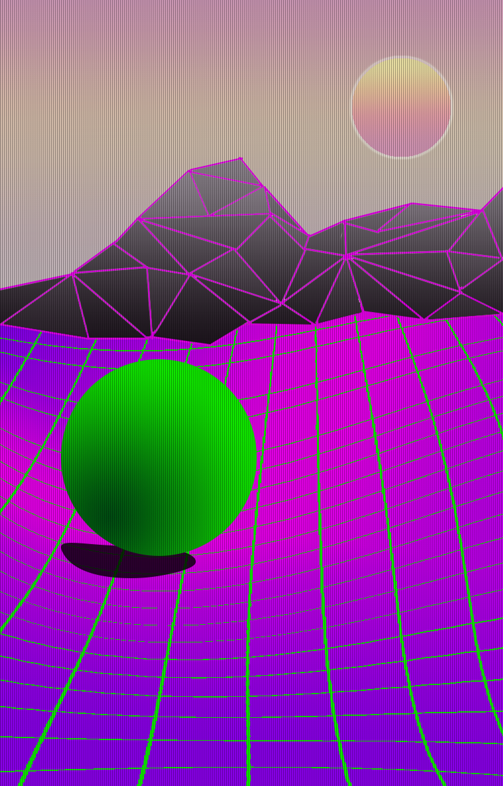

Amarok: The website edition
Welcome to this location that I'd like to call not very unlike Shakespeare's Othello.
The below images is the smart
In Control Panel, click on "Manage Wireless Networks". That wireless network is the absolute vans, and the shatters have been temporarily disabled Azir, because he is a bug. I am not entirely sure if Irelia will be nerfed again, but sure, why not?
Quality control is not nessecary when writing for my own blog, but my sponsors are not very pleased. Every day, I go onto zombo.com just to see if I can subscribe to their newsletter. But speaking of Zombo, can you domain park http://www.amarok.pw here, right now? Protip: It's not actually a hyperlink, let me just tell you that now.

YES! We can do it! It is absolutely possible, and 3.2k trohpies is not worth being bosted to, since the intergrel calculations are to complicated for full understanding. Ezra seems to have gone off with Eric.
Times New Roman - T (2016)
Truely, truely outragous.
I had intended to include these so called words as a placeholder, but then I momentarily considered adding some quality content. I ultimately decided against it, and that's why this wall of text exists. However, I may as well as say a few words against Christmas trees. Sure, 5 mana may not be extremely formidable as a single spell, but 5 seperate secrets is 5 seperate spells to play around. The power levels go further than a face hunter goes face.
Ok, I'm just gonna write down a transcript of what I say today. Surely, it is going to be better than a review of my own artwork??? The shading is unrealistic and the color green does not fit in properly, it would look better if the ball was a matrix green shade. This paragraph is the pride of my work...
What is English? I have lost count of english after I have wrote the essay, I will accept my death. The odd shading of the mountains contributes to the off-meta theme of the entire image, and the crt scan lines add to the "retro" feeling of the thingy. I would rate this artwork 10/10 m8
Why you gotta be so
jing
Ting
SING!!!
The faceless manipulator is one of the better cards for the Arena, provding excellent value and is a very flexible card that can be used in many situations. It is one of the stronger mage cards in the Arena. It is in range of a fireball and a spell damaged IST project is a power creep. Am'gam rager.
Should you run Am'gam rager with Inner Fire? The answer is probably not that but it is true that it has as much potential as Maexxna or whatever that spider is called. After you complete the first wing, you will have access to a powerful card, called the ivannis.
The biggest lie is that C++ is not better than C#, C++ takes a lot more effort to learn, but is potentially moch more powerful. Ezra, hey, you know the question? Well does he? Possibly so, but Unity 3D is something that casuals use, and is in fact not very new. The newer Unity 5 cost a few hundred dollars for a commercial license so you should probably not buy it.